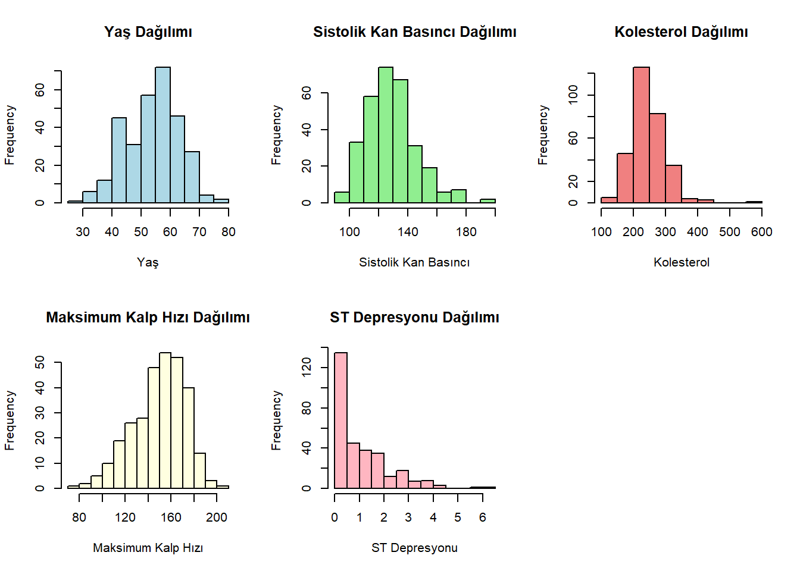
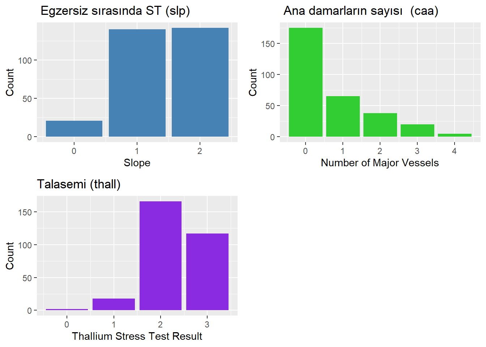
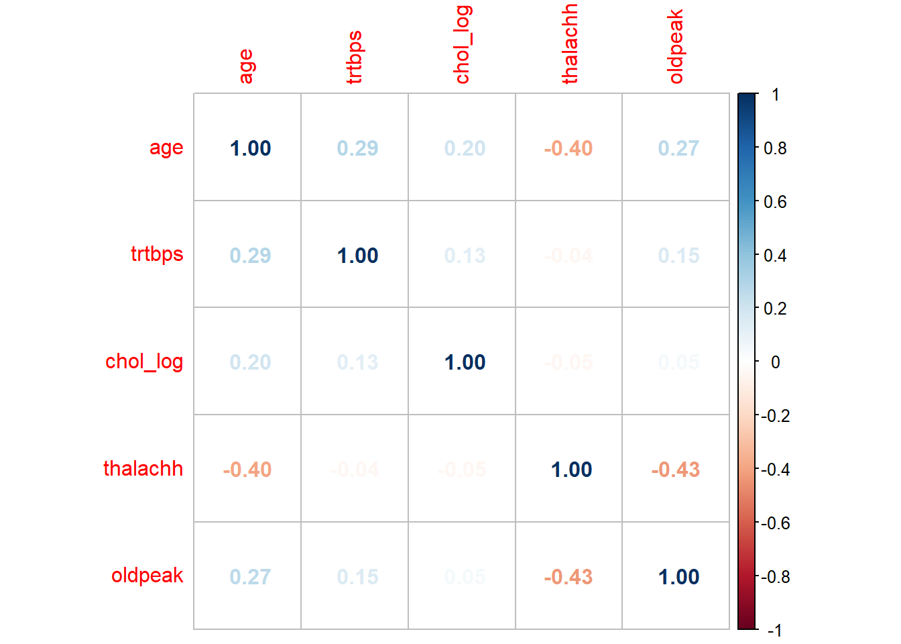
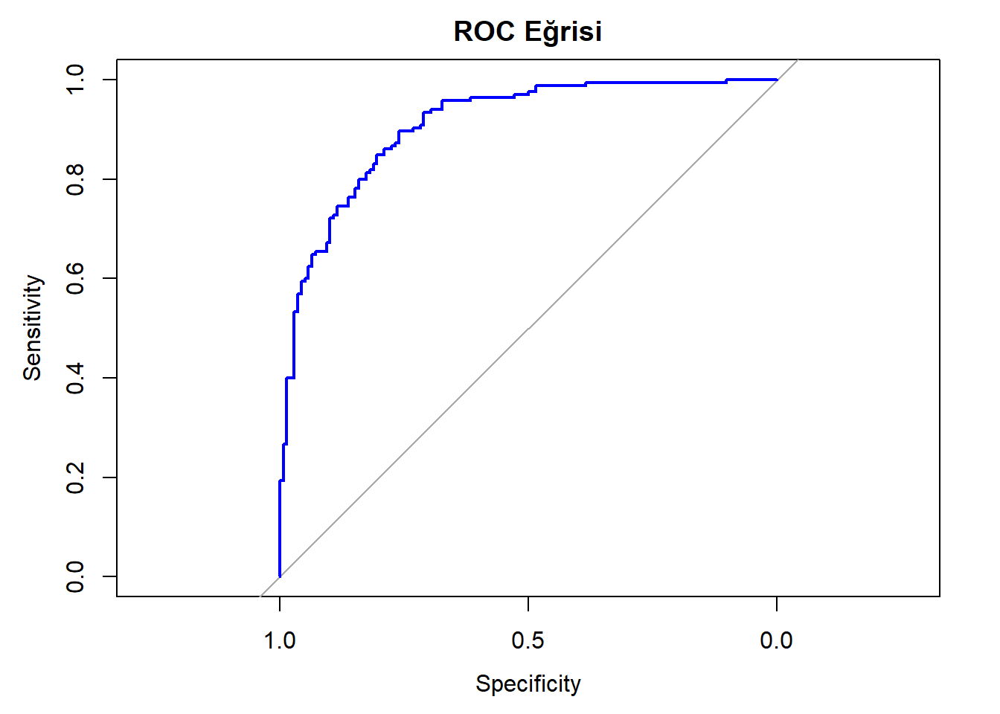

Bu veri seti, bireylerin kalp sağlığına dair bilgileri içermektedir. Amaç, sağlanan bilgiler doğrultusunda bir kişinin kalp krizi riski taşıyıp taşımadığını tahmin etmektir.
Veri seti 14 değişken ve 303 örnek içermektedir. Değişkenler şunlardır:
age - Yaş
Açıklama: Hastanın yaşı.
Tür: Sayısal
sex - Cinsiyet
Açıklama: Hastanın biyolojik cinsiyeti.
Değerler:
0: Kadın
1: Erkek
Tür: Nominal
cp - Göğüs Ağrısı
Açıklama: Bireyin yaşadığı göğüs ağrısının türünü tanımlar.
Değerler:
0: Tipik Angina
1: Atipik Angina
2: Non-Anginal Ağrı
3: Asimptomatik
Tür: Nominal
trtbps - Dinlenme Kan Basıncı
Açıklama: Hastanın dinlenme esnasındaki kan basıncı.
Değerler: mm Hg (milimetre cıva) cinsinden ölçülür.
Tür: Sayısal
chol - Serum Kolesterol
Açıklama: Hastanın serum kolesterol seviyeleri. Serum kolesterol, kan dolaşımındaki kolesterol miktarını ifade eder.
Değerler: mg/dl (miligram/desilitre) cinsinden ölçülür.
Tür: Sayısal
fbs - Açlık Kan Şekeri
Açıklama: Hastanın açlık kan şekeri seviyeleri. Açlık kan şekeri, 8 saatlik bir açlık sonrası kan şekerini ölçen bir parametredir.
Değerler:
0: Açlık Kan Şekeri <= 120 mg/dl
1: Açlık Kan Şekeri > 120 mg/dl
Tür: Sıralı
restecg - Dinlenme Elektrokardiyografik Sonuçlar
Açıklama: Hastanın dinlenme esnasındaki elektrokardiyografik sonuçları, kalbin elektriksel aktivitesini gösterir.
Değerler:
0: Normal
1: ST-T Dalga Anormalliği (T Dalga inversiyonları ve/veya ST segmentinde > 0.05 mV’lik yükselme veya düşüş)
2: Estes kriterlerine göre muhtemel veya kesin sol ventriküler hipertrofi
Tür: Nominal
thalachh - Elde Edilen Maksimum Kalp Hızı
Açıklama: Hastanın elde ettiği maksimum kalp hızı. Maksimum kalp hızı, maksimum egzersiz testi sırasında elde edilen en yüksek kalp hızıdır.
Değerler: bpm (dakikadaki atım sayısı) cinsinden ölçülür.
Tür: Sayısal
exng - Egzersizle İndüklenen Angina
Açıklama: Hastanın egzersiz sırasında angina yaşayıp yaşamadığını gösterir. Angina, kalp kasına yeterli oksijenli kan gitmemesi nedeniyle göğüs ağrısı veya rahatsızlık hissidir.
Değerler:
0: Hayır
1: Evet
Tür: Nominal
oldpeak - ST Depresyonu
Açıklama: Egzersiz sırasında dinlenmeye göre ST depresyonu. ST depresyonu, elektrokardiyogramdaki ST segmentinin normalden düşük olması durumudur.
Değerler: mm (milimetre) cinsinden ölçülür.
Tür: Sayısal
slp - Peak Egzersiz ST Segmentinin Eğim
Açıklama: Peak egzersiz ST segmentinin eğimi.
Değerler:
0: Yükselen
1: Düz
2: Düşen
Tür: Sıralı
caa - Ana Damar Sayısı
Açıklama: Fluoroskopi ile boyanmış ana damar sayısı. Fluoroskopi, iç organları hareketli şekilde gösteren bir görüntüleme tekniğidir.
Değerler: 0 ile 3 arasında değişir.
Tür: Sıralı
thall - Talyum Stres Testi Sonucu
Açıklama: Talyum stres testinin sonucu. Talyum stres testi, kalbe kan akışının nasıl olduğunu gösteren nükleer bir görüntüleme yöntemidir.
Değerler:
1: Normal
2: Sabit Defekt
3: Geri Dönüşümlü Defekt
Tür: Nominal
output - Kalp Krizi Riski
Açıklama: Hastanın kalp krizi geçirme riski.
Değerler:
0: Düşük Risk
1: Yüksek Risk
Tür: Nominal, Bağımlı Değişken
Bu eksik değer grafiği, veri setinin eksik değerler açısından oldukça temiz olduğunu göstermektedir. Veri setindeki hiçbir değişkende eksik veri bulunmaması, analizler için olumlu bir durumdur.
age trtbps chol thalachh oldpeak
Min. :29.00 Min. : 94.0 Min. :126.0 Min. : 71.0 Min. :0.00
1st Qu.:47.50 1st Qu.:120.0 1st Qu.:211.0 1st Qu.:133.5 1st Qu.:0.00
Median :55.00 Median :130.0 Median :240.0 Median :153.0 Median :0.80
Mean :54.37 Mean :131.6 Mean :246.3 Mean :149.6 Mean :1.04
3rd Qu.:61.00 3rd Qu.:140.0 3rd Qu.:274.5 3rd Qu.:166.0 3rd Qu.:1.60
Max. :77.00 Max. :200.0 Max. :564.0 Max. :202.0 Max. :6.20
# Histogramlarpar(mfrow=c(2,3)) # 2 satır, 3 sütunluk bir düzenhist(data$age, main="Yaş Dağılımı", xlab="Yaş", col="lightblue")hist(data$trtbps, main="Sistolik Kan Basıncı Dağılımı", xlab="Sistolik Kan Basıncı", col="lightgreen")hist(data$chol, main="Kolesterol Dağılımı", xlab="Kolesterol", col="lightcoral")hist(data$thalachh, main="Maksimum Kalp Hızı Dağılımı", xlab="Maksimum Kalp Hızı", col="lightyellow")hist(data$oldpeak, main="ST Depresyonu Dağılımı", xlab="ST Depresyonu", col="lightpink")

Normal Dağılıma Yakın: Yaş ve maksimum kalp hızı dağılımları, normal dağılıma yakın veya simetrik dağılımlar gösteriyor.
Sağa Çarpık: Sistolik kan basıncı, kolesterol ve ST depresyonu dağılımları ise sağa çarpık bir dağılım sergiliyor.
# Grafiklerin oluşturulmasıslp_graph <-ggplot(data, aes(x = slp)) +geom_bar(fill ="#4682B4") +ggtitle(" Egzersiz sırasında ST (slp)") +xlab("Slope") +ylab("Count")caa_graph <-ggplot(data, aes(x = caa)) +geom_bar(fill ="#32CD32") +ggtitle(" Ana damarların sayısı (caa)") +xlab("Number of Major Vessels") +ylab("Count")thall_graph <-ggplot(data, aes(x = thall)) +geom_bar(fill ="#8A2BE2") +ggtitle("Talasemi (thall) ") +xlab("Thallium Stress Test Result") +ylab("Count")# Grafiklerin tek bir sayfada gösterilmesigrid.arrange( slp_graph, caa_graph, thall_graph, ncol =2, nrow =2)

Egzersiz Sırasında ST (slp): Veri setindeki katılımcıların çoğunluğunun ST segment eğimi 1 veya 2 değerinde. 0 değeri ise daha az gözlemlenmiş.
Ana Damarların Sayısı (caa): Katılımcıların büyük çoğunluğu 0 ana damara sahipken, damar sayısı arttıkça gözlem sayısı düşüyor.
Egzersizle İndüklenen Anjina (exng): Katılımcıların çoğunda egzersizle indüklenen anjina görülmüyor (0 değeri), fakat belirli bir kısmında gözlemlenmiş (1 değeri).
Göğüs Ağrısı Tipi (cp): Göğüs ağrısı tipinde 0 değeri oldukça baskın, diğer tipler daha az gözlemlenmiş.
Talassemi (thall): Talassemi testinde, 2 ve 3 değerleri daha sık gözlemlenirken, diğer değerler daha az bulunuyor.
Dinlenme Elektrokardiyografisi (restecg): Dinlenme elektrokardiyografisi sonuçlarında 0 ve 1 değerleri neredeyse aynı sıklıkta ve çok yüksekken, 2 değeri oldukça düşük.
library(ggplot2)library(gridExtra)# output_graphoutput_graph <-ggplot(data, aes(x ="", fill =factor(output))) +geom_bar(width =1, stat ="count") +coord_polar(theta ="y") +ggtitle("Kalp hastalıgı (output)") +theme_void() +scale_fill_manual(values =c("#FFD700", "#8B0000")) +geom_text(aes(label =paste0(round(..count.. /sum(..count..) *100, 2), "%")),stat ="count", position =position_stack(vjust =0.5))# fbs_graphfbs_graph <-ggplot(data, aes(x ="", fill =factor(fbs))) +geom_bar(width =1, stat ="count") +coord_polar(theta ="y") +ggtitle("Aclık kan sekeri (fbs)") +theme_void() +scale_fill_manual(values =c("#32CD32", "#FF4500")) +geom_text(aes(label =paste0(round(..count.. /sum(..count..) *100, 2), "%")),stat ="count", position =position_stack(vjust =0.5))sex_graph <-ggplot(data, aes(x ="", fill =factor(sex))) +geom_bar(width =1, stat ="count") +coord_polar(theta ="y") +ggtitle("Cinsiyet (sex)") +theme_void() +scale_fill_manual(values =c("#FF6347", "#4682B4")) +geom_text(aes(label =paste0(round(..count.. /sum(..count..) *100, 2), "%")),stat ="count", position =position_stack(vjust =0.5))# 1. Sayfa: output ve fbsgrid.arrange(output_graph, fbs_graph, ncol =1, nrow =2)
Warning: The dot-dot notation (`..count..`) was deprecated in ggplot2 3.4.0.
ℹ Please use `after_stat(count)` instead.
Warning: package 'corrplot' was built under R version 4.3.3
corrplot(cor_matrix, method ="number")

thalachh ve oldpeak arasında orta düzeyde negatif bir korelasyon (-0.43) var. Ulaşılan maksimum kalp hızı arttıkça ST depresyonunun azalma eğiliminde olduğunu gösteriyor.
yaş ve maksimüm kalp hızı arasında orta düzeyde negatif bir korelasyon (-0.40) var. Yaş ilerledikçe ulaşılabilen maksimum kalp hızının düşme eğiliminde olduğunu gösteriyor.
Bu ilişkiler anlamlı olsa da, bu değişkenlerin modele dahil edilip edilmemesi modelin başarısını etkilemediği için veri setinde herhangi bir işlem yapılmamıştır.
suppressMessages(library(psych))
Warning: package 'psych' was built under R version 4.3.3
• Gözlem: Yaş (age) ile trigliserid seviyesi (trtbps) arasındaki ilişki.
• Yorum: Yaş arttıkça trigliserid seviyeleri de genel olarak artma eğilimindedir. Bu, yaşın trigliserid seviyeleri üzerinde pozitif bir etkisi olduğunu gösterir.
age vs. chol:
• Gözlem: Yaş (age) ile kolesterol seviyesi (chol) arasındaki ilişki.
• Yorum: Yaş arttıkça kolesterol seviyeleri de genel olarak artma eğilimindedir. Bu, yaşın kolesterol seviyeleri üzerinde pozitif bir etkisi olduğunu gösterir.
age vs. thalachh:
• Gözlem: Yaş (age) ile maksimum kalp atım hızı (thalachh) arasındaki ilişki.
• Yorum: Yaş arttıkça maksimum kalp atım hızı genel olarak azalma eğilimindedir. Bu, yaşın maksimum kalp atım hızı üzerinde negatif bir etkisi olduğunu gösterir.
trtbps vs. chol:
• Gözlem: Trigliserid seviyesi (trtbps) ile kolesterol seviyesi (chol) arasındaki ilişki.
• Yorum: Trigliserid seviyeleri arttıkça kolesterol seviyeleri de kısmen artma eğilimindedir. Bu, trigliserid ile kolesterol seviyeleri arasında düşük düzeyde bir pozitif ilişki olduğunu gösterir.
trtbps vs. thalachh:
• Gözlem: Trigliserid seviyesi (trtbps) ile maksimum kalp atım hızı (thalachh) arasındaki ilişki.
• Yorum: Trigliserid seviyeleri ile maksimum kalp atım hızı arasında belirgin bir ilişki yoktur. Bu, iki değişken arasında çok düşük bir korelasyon olduğunu gösterir.
chol vs. thalachh:
• Gözlem: Kolesterol seviyesi (chol) ile maksimum kalp atım hızı (thalachh) arasındaki ilişki.
• Yorum: Kolesterol seviyeleri ile maksimum kalp atım hızı arasında belirgin bir ilişki yoktur. Bu, iki değişken arasında çok düşük bir korelasyon olduğunu gösterir.
1 ile 5 arasındaysa, orta düzeyde çoklu bağlantı olabilir.
5’ten büyükse, yüksek düzeyde çoklu bağlantı sorunu olabilir.
Bu çıktıdaki değerlere göre, tüm değişkenler için VIF değerleri 5’in altında görünüyor, bu da bu veri setindeki seçilen değişkenler arasında ciddi bir çoklu bağlantı sorunu olmadığını gösterebilir.
Model
#Logistic Regresyon model_heart <-glm(output ~thalachh+chol_log+oldpeak+sex+age+trtbps+thall+caa_log+slp+exng+restecg+fbs+cp_log, family ="binomial", data = data)summary(model_heart)
Call:
glm(formula = output ~ thalachh + chol_log + oldpeak + sex +
age + trtbps + thall + caa_log + slp + exng + restecg + fbs +
cp_log, family = "binomial", data = data)
Coefficients:
Estimate Std. Error z value Pr(>|z|)
(Intercept) 9.025415 5.902875 1.529 0.126268
thalachh 0.020773 0.010669 1.947 0.051533 .
chol_log -1.331021 1.045997 -1.272 0.203199
oldpeak -0.435680 0.214545 -2.031 0.042284 *
sex -1.719847 0.475623 -3.616 0.000299 ***
age 0.009618 0.024002 0.401 0.688642
trtbps -0.022395 0.010660 -2.101 0.035656 *
thall -0.830900 0.294541 -2.821 0.004787 **
caa_log -0.294461 0.056586 -5.204 1.95e-07 ***
slp 0.740321 0.368386 2.010 0.044470 *
exng -0.874254 0.425021 -2.057 0.039689 *
restecg 0.335416 0.361217 0.929 0.353112
fbs 0.244652 0.546326 0.448 0.654288
cp_log 0.258083 0.053813 4.796 1.62e-06 ***
---
Signif. codes: 0 '***' 0.001 '**' 0.01 '*' 0.05 '.' 0.1 ' ' 1
(Dispersion parameter for binomial family taken to be 1)
Null deviance: 417.64 on 302 degrees of freedom
Residual deviance: 197.33 on 289 degrees of freedom
AIC: 225.33
Number of Fisher Scoring iterations: 6
Hipotez
H0 (Null Hipotezi): Bağımsız değişkenin kalp hastalığı riski üzerinde etkisi yoktur .
H1 (Alternatif Hipotezi): Bağımsız değişkenin kalp hastalığı riski üzerinde anlamlı bir etkisi vardır .
Anlamlı Değişkenler: thalachh, oldpeak, sex, thall, caa ve exng modelde anlamlıdır. Bu değişkenler, hedef değişken olan kalp hastalığı riski üzerinde etkili olabilir.
Anlamlı Olmayan Değişkenler: age, chol, trtbps, slp, restecg ve fbs ise modelde anlamlı bir etki yaratmamaktadır.
Nagelkerke R-kare değeri yaklaşık %69 civarındadır, bu da modelin bağımlı değişkendeki varyansın yaklaşık %69’unu açıkladığını gösterir. Bu sonuç, modelin veriyi oldukça iyi bir şekilde açıkladığını göstermektedir.
# Tahminler (olasılık düzeyinde)tahminler <-predict(model_heart, type ="response")
BIC değeri model seçimi için temel kriterdir. Daha düşük bir BIC değeri, modelin hem iyi bir uyum sağladığını hem de gereksiz karmaşıklıktan kaçındığını gösterir.
Bu tabloda mod2 en düşük BIC değerine (287.3897) sahiptir ancak model başarısına bakılarak mod6 tercih edilmiştir çünkü mod2 daha iyi sonuç vermektedir.
Model Karmaşıklığı (Df.fit):
Serbestlik derecesi (Df.fit) arttıkça model karmaşıklığı artar. Modeller arasındaki Df.fit artışı, daha fazla değişkenin modele dahil edildiğini gösterir.
Ancak, daha karmaşık bir model her zaman daha iyi bir model anlamına gelmez; bu nedenle BIC değeri bu dengeyi sağlamak için önemlidir.
BIC.diff:
mod6 için BIC.diff = 0.2519 olarak gösteriliyor. Bu, mod6’nın diğer modellerle karşılaştırıldığında (mod 2 dışında) en iyi uyumu ve en düşük karmaşıklığı sağladığını gösterir.
Diğer modellerin BIC.diff değerleri arttıkça, bu modellerin mod2’ya göre daha az tercih edilir hale geldiğini görebiliriz.
summary(mod6)
Call:
glm(formula = output ~ age + sex + cp_log + trtbps + chol_log +
fbs + restecg + thalachh + caa_log, family = "binomial",
data = data)
Coefficients:
Estimate Std. Error z value Pr(>|z|)
(Intercept) 7.630298 5.229248 1.459 0.14452
age 0.012529 0.022076 0.568 0.57034
sex -1.938892 0.415732 -4.664 3.10e-06 ***
cp_log 0.288463 0.047121 6.122 9.25e-10 ***
trtbps -0.028754 0.009958 -2.888 0.00388 **
chol_log -1.677525 0.936090 -1.792 0.07312 .
fbs 0.133936 0.471401 0.284 0.77632
restecg 0.282754 0.323702 0.874 0.38239
thalachh 0.039439 0.009594 4.111 3.94e-05 ***
caa_log -0.270332 0.049222 -5.492 3.97e-08 ***
---
Signif. codes: 0 '***' 0.001 '**' 0.01 '*' 0.05 '.' 0.1 ' ' 1
(Dispersion parameter for binomial family taken to be 1)
Null deviance: 417.64 on 302 degrees of freedom
Residual deviance: 230.50 on 293 degrees of freedom
AIC: 250.5
Number of Fisher Scoring iterations: 5
H0 (Null Hipotezi): İlgili değişkenin modelde bağımlı değişken (output) üzerinde anlamlı bir etkisi yoktur.
H1 (Alternatif Hipotez): İlgili değişkenin modelde bağımlı değişken (output) üzerinde anlamlı bir etkisi vardır.
Anlamlı Değişkenler:
sex (p = 3.10e-06 < 0.05)
cp_log (p = 9.25e-10< 0.05)
trtbps (p = 0.00388< 0.05)
thalachh (p = 3.94e-05< 0.05)
caa_log (p = 3.97e-08< 0.05)
Anlamlı Olmayan Değişkenler:
(Intercept) (p = 0.14452 > 0.05)
age (p = 0.57034> 0.05)
chol_log (p = 0.07312> 0.05)
fbs (p = 0.77632> 0.05)
restecg (p = 0.38239> 0.05)
suppressMessages(library(pROC))
Warning: package 'pROC' was built under R version 4.3.3
cat("Model 2 AUC: ", auc(roc(data$output, predict(mod2, type ="response"))), "\n")
Setting levels: control = 0, case = 1
Setting direction: controls < cases
Model 2 AUC: 0.8841238
cat("Model 6 AUC: ", auc(roc(data$output, predict(mod6, type ="response"))), "\n")
Setting levels: control = 0, case = 1
Setting direction: controls < cases
Model 6 AUC: 0.9080808
suppressMessages(library(pROC))# Modelden tahminlerpredictions <-predict(mod6, type ="response")roc_curve <-roc(data$output, predictions)
Setting levels: control = 0, case = 1
Setting direction: controls < cases
# ROC eğrisiplot(roc_curve, main ="ROC Eğrisi", col ="blue", lwd =2)

# AUC değeriauc(roc_curve)
Area under the curve: 0.9081
Yüksek Sensitivity: ROC eğrisinin sol üst köşeye yakın olması, modelin duyarlılığını (gerçek pozitifleri doğru şekilde yakalama oranını) yüksek tuttuğunu gösterir. Bu, modelin hastaları doğru şekilde tespit etme konusunda başarılı olduğunu ifade eder.
Yüksek Specificity: Eğri aynı zamanda yanlış pozitif oranının (1-specificity) düşük olduğunu gösteriyorsa, modeliniz gerçek negatifleri (sağlıklı kişileri) de doğru şekilde tespit ediyor demektir. Bu, modelin sağlıklı kişileri yanlışlıkla hastaya dönüştürme oranının düşük olduğunu gösterir ve modelin yüksek özgüllük gösterdiğini ifade eder.
ROC eğrisinin şekli ve konumu, modelinizin oldukça başarılı olduğunu ve hem duyarlılığı hem de özgüllüğü yüksek seviyede tuttuğunu gösteriyor.
Modelin başarısını değerlendirmek için ROC eğrisinin altındaki alan (AUC) hesaplandı ve 0.9081 bulundu. Bu değer, modelin %90,8 doğrulukla pozitif sınıfları doğru bir şekilde ayırt edebildiğini göstermektedir.
# Odds ratio ve güven aralıklarıodds_ratios <-exp(coef(mod6))conf_intervals <-exp(confint(mod6))
Waiting for profiling to be done...
# Sonuçları bir tablo olarak görüntülemeresults <-data.frame(Variable =names(coef(mod6)),Coefficient =coef(mod6),OddsRatio = odds_ratios,LowerCI = conf_intervals[, 1],UpperCI = conf_intervals[, 2],PValue =summary(mod6)$coefficients[, 4])print(results)